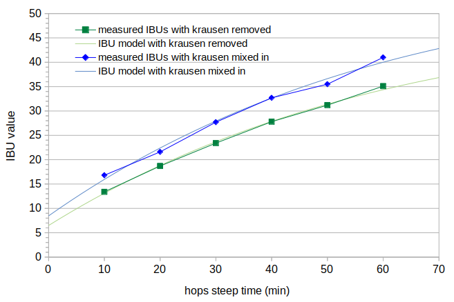

Abstract
It is often recommended to remove the krausen during fermentation for a "smooth bitterness." Some brewers accomplish this through the use of a blow-off tube and a small headspace in the fermentation vessel. Many brewers do nothing about krausen, allowing most of it to fall back into the beer. This post looks at how the removal of krausen affects IBUs by measuring IBUs resulting from different amounts of krausen loss and different hop steep times. The data show that losses of krausen to deposits on the walls of the fermentation vessel can have a small (5% to 10%) impact on IBUs, and that the loss of krausen through a blow-off tube can result in more than a 25% reduction in IBUs. This effect on IBUs is quantified with separate adjustments for isomerized alpha acids (IAA) and the auxiliary bittering compounds (nonIAA) that both contribute to measured IBUs. The results indicate that both IAA and nonIAA are lost with the removal of krausen, but that the loss of nonIAA is about three times greater than the loss of IAA.
1. Introduction
Krausen (or kraeusen, kräusen, or barm) is the foam that forms on top of fermenting beer, in varying shades of white, off-white, brown, and even green (from the hops). This foam consists of yeast, hop resins, and wort proteins [Palmer, p. 89] and some of it tends to adhere to the sides of the fermentation vessel (FV).
It is often, but not always, recommended that the krausen be removed. Kai Troester, citing Narziss and Kunze, says that "if a smooth bitterness is desired, [krausen] should be removed via blow-off tube [or] skimming and not allowed to fall back into the beer" [Troester (pH)]. However, Troester also states that "common brewing advice in American home brewing is to let the Kraeusen fall back into the beer after primary fermentation finishes" [Troester (Krausen)]. Letting krausen fall back into the beer during fermentation appears to also currently be the norm in the UK.
According to John Palmer, "these compounds [in krausen] are very bitter and if stirred back into the wort, would result in harsh aftertastes. Fortunately these compounds are relatively insoluble and are typically removed by adhering to the sides of the fermentor as the krausen subsides" [Palmer, p. 89].
According to Mark Garetz, "if [krausen] is stirred back into the wort at the proper time, hop utilization is increased by some 18%. But what usually happens is that these iso-alpha acids are lost. In commercial practice, this head may be skimmed. On the homebrew level, it may be blown out if the brewer uses the 'blow-off' method. Otherwise it is pushed to the sides of the fermenter where it sticks. ... that which doesn't stick to the fermenter walls will fall back through the beer, but not be redissolved. So regardless of the fermentation method, these alpha acids are lost" [Garetz, p. 126-127].
Lewis and Young say (in 2001) that the "world's biggest brewing operation" in the U.S. removes krausen through the use of a sloping roof on their fermenter and a small headspace that forces the krausen into a "foam chamber," and that this is not unlike the Burton Union System [Lewis and Young, p. 304].
Hough et al. say that "the head gradually collapses, leaving a dark-colored, bitter-tasting scum which should be separated from the beer by skimming or suction. Some breweries arrange for this scum to stick to the roof of the fermenter and then be removed by special chutes at the side of the vessel." [Hough et al., pp. 652-653].
Noonan says that during the late krausen stage, all of the krausen can be "floated, siphoned, or skimmed off, even as more is forming, so that it does not fall back through the beer" [Noonan, p. 184].
Troester tested the impact of krausen removal on the taste of beer. He found that some people were able to detect a difference, but that others were not. (Some people are better at detecting differences in bitterness levels than others, and this difference is thought to be genetic.) Those who could detect a difference preferred the beer with krausen removed, describing it as having a "cleaner aftertaste" that Troester states is desired in "any German style beer" [Troester (Kraeusen)].
Jake Huolihan at Brülosophy looked at the impact of skimming krausen during fermentation [Huolihan] and found that, similar to the results from Troester, nearly half of the participants in his experiment were able to detect a difference between beers with and without krausen removal. He did not look at the perception of bitterness quality by those who were able to detect a difference. Huolihan was able to reliably detect the beer with krausen removal, perceived that beer to be less bitter, and had a slight preference for that beer.
Given that the krausen is bitter, as indicated by Hough et al. [p. 652] and Palmer [p. 89], it seems plausible that some of the isomerized alpha acids (IAA) and possibly the auxiliary bittering compounds (nonIAA) adhere to the proteins and/or yeast in the krausen, and so the removal of krausen reduces the level of IBUs and bitterness in the remaining beer. The experiment described here tests this hypothesis of a reduction in IBU levels caused by the removal of krausen.
2. Overview of the Experiment
This blog post looks at the impact of krausen removal on IBUs. Using a single batch of wort, several conditions were created:
3. Experimental Procedures
In order to minimize any possible effects caused by removing samples of wort during the boil, I used as large a batch size as I dared in my 10 G (40 l) kettle. I used 7.0 lbs (3.18 kg) of Briess Pilsen DME in 8.0 G (30.28 l) of water, yielding about 8.45 G (31.99 l) of room-temperature wort with a specific gravity of about 1.037.
I used hops from a 1 lb (0.45 kg) bag of Comet hops from Hops Direct that were purchased soon after harvest and subsequently stored in a vacuum-sealed bag in my freezer. This bag had an alpha-acid rating on the package of 9.9%. I had these hops analyzed by Advanced Analytical Research one month before brew day (which was about six months after harvest), and the result showed an alpha-acid content of 9.70%.
I added hops (i.e. started the steep time at 0) after the wort had been boiling for 5 minutes, to avoid the foam associated with the start of the hot break. The hops were boiled for a steep time of 60 minutes with the cover on the kettle (except for the first few minutes and for taking samples) to minimize evaporation and volume changes. I did not use a mesh bag with the hop cones. Just prior to adding hops, I took samples for pH measurement. The pH at 65°F (18°C) was 5.82, which can be normalized to a room-temperature pH of 5.80.
I targeted an initial alpha-acid concentration of less than 170 ppm in order to not exceed the solubility limit of around 200 ppm at boiling. With an expected evaporation loss of 0.17 G (0.63 l) from time spent heating the wort and waiting 5 minutes before adding hops, I expected 8.38 G (31.72 liters) of wort when the hops were added. With an AA rating of about 9.70%, 1.88 oz (53.31 g) were added to achieve an initial concentration of about 163 ppm.
Samples for Conditions A and B were taken every 10 minutes. Each sample (about 32 oz (0.95 l)) was taken from the boil in a measuring cup and then quickly transferred to a large aluminum cup using a wire mesh sieve to remove larger hop particles. The aluminum cup was placed in an ice bath, and the wort was stirred to cool quickly. Once cooled to 77°F (25°C), the sample was transferred to a sanitized, sealed, and labeled 1.8-quart (1.7-liter) container. I aerated each sample by vigorous shaking for 60 seconds, then added about .016 oz (0.47 g) of Safale US-05 yeast (age 7 months) to target 750,000 viable cells per ml and degree Plato [Fix and Fix, p. 68]. (The process of taking a sample, cooling it, transferring it to a sanitized container, aerating, and pitching yeast took almost 10 minutes.) At the end of the boil, an additional sample was taken for measuring original gravity and pH. The OG and room-temperature pH of the wort at the end of the boil were 1.039 and 5.66, respectively.
The wort was then quickly chilled (using a hydra wort chiller) to 75°F (24°C) and 3.5 G (13.25 l) of settled wort were transferred to a sanitized carboy. This wort was aerated for 90 seconds using a mix-stir, and 0.233 oz (6.60 g) of the same Safale US-05 yeast was pitched. Within 12 hours the wort was separated into four different 1-gallon (128-oz or 3.78-liter) fermentation vessels for Conditions C, D, E, and F.
For Conditions A and B, after all samples were taken during the boil, equal amounts (about 16 oz or 0.48 l) of each sample were transferred to two sanitized quart (liter) containers for fermentation. The container lids were cracked open to allow carbon dioxide to vent. For Condition A, once a day I used a sanitized thin rubber spatula to gently remove deposits from the sides of the six containers. For Condition B, once a day I used sanitized paper towels (heated in an oven at 300°F (150°C) for 10 minutes and then stored in a ziplock bag) to remove the krausen by folding and then gently skimming the towels over each of the six samples. (By heating the paper towels in this way, the outermost towel (in a layer of six) turned brown but did not burn. Your experience in using this technique may be different, and I strongly recommend caution if using this approach.)
Condition C consisted of 64 oz (1.89 l) of wort with an airlock, and once a day I gently swirled the fermenting wort to try to reduce the deposits on the side of the FV. Condition D consisted of 64 oz (1.89 l) of wort with a blow-off tube and was left undisturbed during fermentation. Condition E consisted of 111 oz (3.28 l) of wort and a blow-off tube, so that the krausen would come into contact with, and hopefully stick to, the top of the FV. Condition F consisted of 128 oz (3.78 l) of wort with a tiny headspace and blow-off tube, so that a large amount of the krausen would be forced through the blow-off tube. Conditions E and F were undisturbed during fermentation. The blow-off tubes for Conditions D, E, and F all went into a container of Saniclean (diluted to the recommended level) to prevent air from flowing back into the FV.
After 11 days of fermentation, 4 oz (0.12 l) of each sample was measured for IBUs by Oregon BrewLab. The final gravity of all samples was about 1.0020 (minimum 1.0015; maximum 1.0030). The final pH of all samples was about 4.10 (minimum 4.08, maximum 4.15).
4. Experimental Results
Mixing the krausen deposits back into the wort worked as expected for Condition A. Skimming the krausen worked as expected for Condition B, but new krausen formed fairly soon after removal. Skimming off krausen several times a day might yield different results.
I wasn't able to fully remove the krausen deposits from Condition C using gentle swirling, so Conditions C and D seemed to have very similar amounts of krausen deposits. The krausen from Condition E did not stick as much as I had expected to the top of the FV, but seemed to have somewhat more krausen deposits than Conditions C or D. Condition F pushed a significant amount of krausen through the blow-off tube for the first few days, and then the volume of fermenting beer was lowered enough that additional krausen remained in the FV.
IBU results for Conditions A and B are shown in Table 1 and Figure 1. For Conditions C, D, E, and F, IBU values were 38.2, 37.4, 36.7, and 30.3, respectively.
| 10 min | 20 min | 30 min | 40 min | 50 min | 60 min | |
| Condition A (krausen mixed in) | 16.8 | 21.6 | 27.7 | 32.7 | 35.5 | 41.0 |
| Condition B (krausen removed) | 13.4 | 18.7 | 23.4 | 27.8 | 31.2 | 35.1 |
 Figure 1. Plot of the measured IBU values for Condition A (dark-blue line and points) and Condition B (dark-green line and points). In Condition A (dark blue), the krausen deposits were gently mixed back into the fermenting beer. In Condition B (dark green), the krausen was removed by skimming once a day. This figure also shows the estimated IBU values from the best fit to the model described in Section 5, with the light-blue line for Condition A and the light-green line for Condition B.
5. Analysis
In this section, an IBU loss of X% is the same as a loss factor F, where F = (100% − X%)/100%. For example, if Condition X has 50 IBUs and Condition Y has 45 IBUs, the loss factor F from X to Y
is 45 / 50 = 0.90 (in other words, Y = F × X), and this is the same as a 10% loss (0.90 = (100% − 10%)/100%).
The IBU values of Conditions A and B at the 60-minute sample time can be generally compared with the IBU values from the other conditions, because the wort for the other conditions was cooled very quickly after the 60-minute steep time.
If we consider Condition A at 60 minutes (41 IBUs) to have no krausen loss, we can compare other conditions with Condition A as a baseline. In this case, a ring of krausen deposits yielded an IBU loss of about 8% (with 7% in Condition C and 9% in Condition D), and at least some krausen stuck to the top of the FV (Condition E) yielded a loss of 10%. Presumably, more krausen stuck to the top of the FV would yield greater loss. Daily removal of krausen by skimming (Condition B) yielded a loss of 14%, and removal of krausen through a blow-off tube (Condition F) yielded an IBU loss of 26%.
We can use the technique described in Estimating Isomerized Alpha Acids and nonIAA from Multiple IBU Measurements to obtain separate estimates of the isomerized alpha acid (IAA) and nonIAA contributions to the IBU for Conditions A and B. This technique uses a model of IAA production (and degradation) developed by Mark Malowicki [Malowicki, p. 27] and a model of nonIAA components that doesn't vary with boil time. The technique finds the best fit of scaling factors for losses of IAA and nonIAA given the model's estimate of production of IAA and the measured IBU values. We can then estimate how much of the decrease in IBUs between Conditions A and B comes from IAA losses and how much from nonIAA losses. Because IBUs measure concentration but the volume of the wort decreases during the boil, we can normalize the measured IBUs to a single volume in order to directly compare IBU values from all samples. Using this estimation technique and this IBU normalization, the best estimate for Condition A is an IAA scaling factor of 0.52 and a nonIAA scaling factor of 0.0063. (In other words, just over half of the IAA that was produced during the boil was lost during the boil and fermentation, and of the total concentration of hop matter in the wort, 1/159 ended up contributing to the IBU as polyphenols and oxidized alpha- and beta acids.) These scaling factors yield a root-mean-square (RMS) error of 0.73 IBUs between the model and the measured IBU values, indicated by the light-blue line in Figure 1. The best estimate for Condition B is an IAA scaling factor of 0.47 and a nonIAA scaling factor of 0.0045, with an RMS error of 0.30 IBUs, indicated by a light-green line in Figure 1. These four scaling factors imply that the removal of krausen in Condition B caused a 9.6% loss of IAA and a 28.6% loss of nonIAA. While the amount of krausen and IBU loss varies with each condition, if we assume that the relative loss of IAA and nonIAA is constant, this suggests that with krausen loss, the loss of nonIAA is 2.97 times greater than the loss of IAA.
Some might say that because the measured IBU value of Condition A at 60 minutes (41.0 IBUs) is greater than the model value (40.0 IBUs), and because the model represents the combination of six data points instead of a single data point, then a better representation of Condition A in comparison with other conditions is 40 IBUs. While this may be true, it also took slightly longer to cool the 6.5 G (24.6 l) of wort (even using the hydra wort chiller) than the 32 oz of wort in Conditions A and B, which would slightly increase the IBUs for Conditions C through F. Also, the relationships drawn from the data in this blog post must necessarily be preliminary, as they are based on a very tiny amount of data. So, I wouldn't put a lot of emphasis on 8% loss compared with 10% loss, or 31% loss compared with 29% loss.
6. Conclusion
In general, it seems that the more krausen is lost to deposits, skimming, or blow-off, the greater the reduction in IBUs. Mixing the krausen back into the beer yields the highest IBU levels. Leaving krausen deposits on the side of the FV will reduce the IBU level somewhat relative to mixing in the krausen; in this study, there was an IBU loss of 7% to 10%. Removing krausen by daily skimming results in more loss, with a loss of 14% seen here. Removing krausen through a blow-off tube results in the most loss, at 26% in this study. The loss of nonIAA to krausen is about three times greater than the loss of IAA.
In contrast with some of the literature, it appears that simply letting the krausen stick to the walls of the FV does not remove krausen (or lower the bitterness level) as effectively as skimming or blow-off. In normal homebrewing practice, with minor krausen deposits on the FV walls, the impact on IBUs is similar to mixing the krausen back into the fermenting beer. Removing krausen through the use of a blow-off tube was the most effective at reducing IBUs in these experiments, although skimming might have had more of an impact if performed more often than once a day.
It seems plausible that both IAA and nonIAA components bind to proteins and/or yeast in the krausen, and when the krausen is removed the IBUs therefore decrease. The data suggest that losses of nonIAA components are about three times those of IAA.
The reason given to remove krausen is to promote a "smoother" bitterness [Troester (Kraeusen)]. (And, presumably the "world's largest brewery" wouldn't remove krausen [Lewis and Young, p. 304] without some kind of purpose.) This change in bitterness quality may not be noticeable to all drinkers and might be more pronounced in lagers than in ales [Troester (Kraeusen)]. While I am fairly sure that I am not very sensitive to bitterness, I tasted samples from Conditions C (38.2 IBUs) and F (30.3 IBUs) to see if I could detect a difference. I performed four blind tastings at different times in the same day, using 2 samples from Condition C and 1 sample from Condition F in two tastings, and 1 sample from C and 2 from F in the other two tastings. The goal was to detect which beer of the three was different, and if I succeeded, which beer I preferred. The samples were served uncarbonated and at room temperature. I found myself guessing which one was Condition C and which was Condition F, knowing that one had more IBUs than the other. I had a consistent preference for the beer that I thought was less bitter. I correctly identified 10 of the 12 samples, but the two errors in two different tastings meant that I was able to identify the odd-beer-out only half the time. As to the question of whether F had a "smoother bitterness" or if F was simply less bitter, I couldn't say. (It would be interesting to compare two beers with very different amounts of krausen removal but the same measured IBU levels. Such an experiment would be well suited to the folks over at Brülosophy.) My wife, who prepared the samples for tasting but otherwise knew nothing of the different conditions, interestingly described Condition C as having an "overripe peach" aroma that Condition F didn't have. This suggests that in addition to reducing bitterness, krausen removal may also decrease the level of aromatic hop compounds. These observations are, of course, very preliminary and in no way conclusive.
It should be noted that it is difficult to quantify how much krausen is deposited or lost. It is also difficult to predict how much krausen will be produced during fermentation. In particular, the krausen deposits on the FV for Condition E were not as large as hoped; more impact may have been seen with a more vigorous production of krausen. In general, though, one may be able to put krausen deposits into one of several categories, such as "light deposits," "heavy deposits," "moderate blow-off loss," and "large blow-off loss." Then, the impact on IBUs can be approximated from the specified category.
Acknowledgement
Many thanks (again) to Dana Garves at Oregon BrewLab for the IBU analysis. Without such consistent analysis results within and across conditions, this blog post would not have been possible.
References
Navigate to:
AlchemyOverlord home page